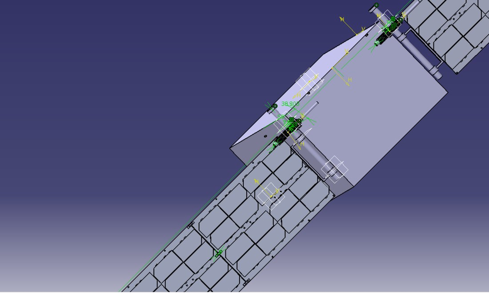
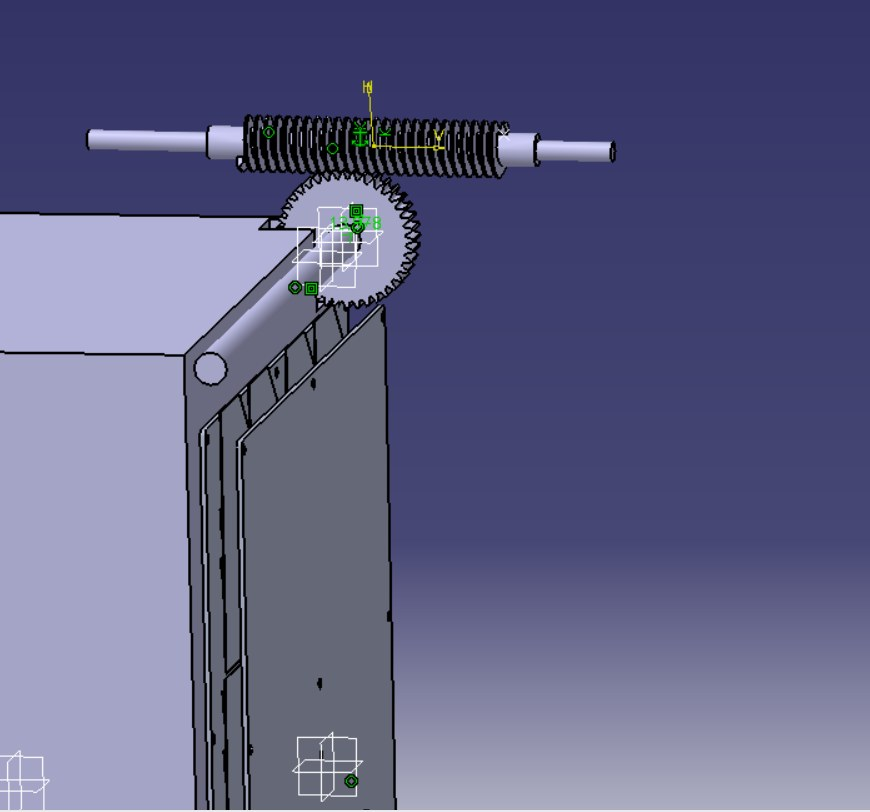
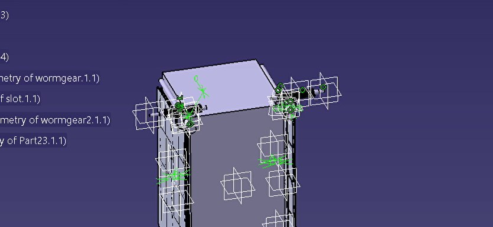
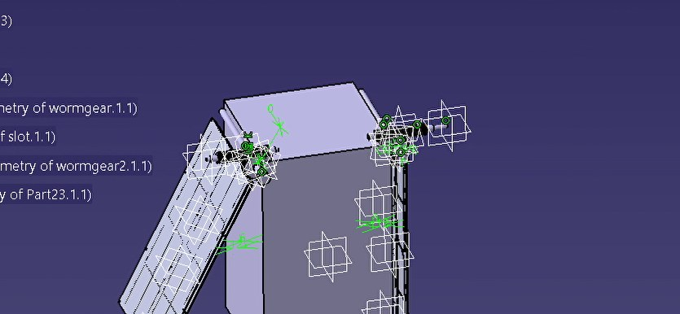
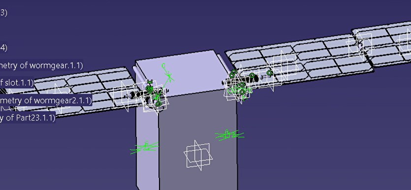
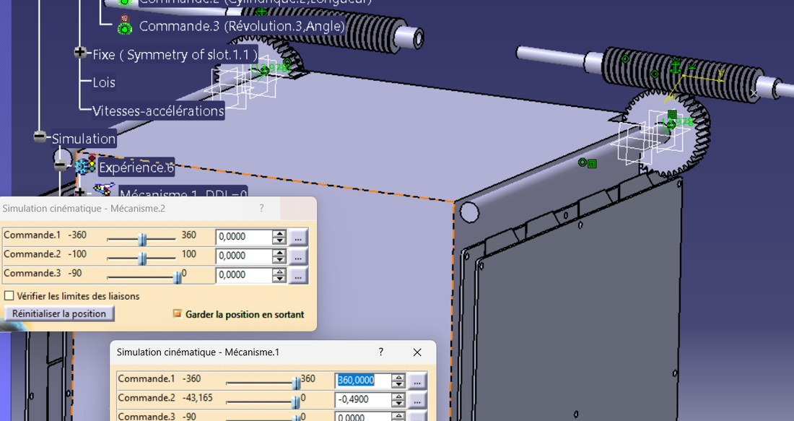

Worm-Gear Root Hinge | Two-Stage 0→180° Deployment | CATIA V5 DMU Kinematics

A 6U CubeSat has to carry its solar panels folded flat against the body through launch, then deploy them reliably in orbit to expose the cells to the sun. This project designs the hinge and deployment mechanism that does that: a self-locking worm-gear root hinge that swings the folded panel stack clear of the spacecraft, followed by spring-loaded knuckle hinges that unfold the panels into a flat wing. The complete mechanism was modelled in CATIA V5 and its motion validated with DMU Kinematics.
The design choice that drives everything is the worm gear. A worm-and-wheel is self-locking — it cannot be back-driven — so the array holds any commanded angle with no power and resists disturbance torques, while the high reduction ratio makes deployment slow and controlled rather than a spring-loaded snap. That single property removes the need for a separate latch or brake at the root.
Fold a multi-panel array into a ~12 mm stack for launch, restrain it with hold-down / release mechanisms, then deploy it in two controlled stages — a self-locking worm-gear root hinge (0→90°) followed by spring-loaded knuckle hinges that unfold the panels flat (to a 180° span) — with the whole motion proven kinematically before any hardware.
The mechanism was designed against a set of system requirements for the folded stack, the restraint system and the environment it has to survive:
The two HDRM layouts matter because a hold-down point sets where the launch loads enter the folded stack; comparing a single central restraint against two distributed points is what a structural qualification of the mechanics would trade off.
At the root of each panel wing, a worm (a threaded screw shaft) meshes with a worm wheel fixed to the hinge axis. Rotating the worm rotates the wheel — and therefore the panel — through a large reduction, so a full turn of the worm produces only a small, controlled swing of the array. Because the mesh is self-locking, the array stays put wherever it stops, with no holding torque required.

The worm (top) drives the worm wheel at the corner of the panel. This is the root hinge: turning the worm swings the whole folded stack away from the spacecraft body. The self-locking mesh means the wing holds position at any angle without a separate latch.
The worm wheel was built as a parametric involute gear in CATIA, so its geometry is defined by the module and tooth count and the rest follows by formula:
R = M·Z / 2 = 20 mm · Ra = R + M = 21 mm · Rf = R − 1.25·M = 18.75 mm
Deployment begins when the burn-wire hold-down / release mechanisms free the folded stack. From there the array opens in two stages: the worm-gear root hinge first rotates the stack about 90° clear of the body, then the spring-loaded knuckle hinges between panels unfold them flat, extending the array to its full 180° span. A worm hinge sits on each side of each panel so the load is shared symmetrically across the wing.

1 — Stowed (0°)
Panels folded flat against the body, restrained by the HDRMs.

2 — Root hinge (~90°)
The worm gear swings the stack clear of the spacecraft.

3 — Deployed (180°)
Knuckle hinges unfold the panels into a flat wing.
The whole assembly was rebuilt as a kinematic mechanism in CATIA V5 DMU Kinematics to prove the motion before committing to hardware. The worm/wheel pair is a gear joint, the knuckles are revolute joints, and the inter-panel connection hardware is tied in with rigid joint chaining. The degrees of freedom were balanced down to a single driving command per stage, so the deployment plays back from one input.

The DMU Kinematics setup: driving commands (worm rotation and hinge angle) on two mechanisms, with the gears meshed on the spacecraft corners. Playing the commands drives the full deployment, which is used to check the range of motion and clearances.
A specific thing the simulation checks is clearance: because a stated requirement is that no two panel surfaces touch when stowed, the kinematic model is used to confirm the folded stack and its inter-panel supports keep the surfaces apart through the whole stow-and-deploy path. Getting the mechanism to solve cleanly took some troubleshooting — gear-joint definition, balancing the degrees of freedom, sorting out angle-sign conventions, and chaining the rigid joints for the connection hardware.
Design & kinematics stage — structural qualification is the next phase
This work covers the mechanism design and the kinematic validation of the deployment. The next phase is the structural qualification of the mechanics: modal and random-vibration / quasi-static FEA of the stowed and deployed configurations under the launch load cases, run for both HDRM layouts (single central point vs two centreline points) and checked against the ≈ 100 g component limit. Gear, hinge and HDRM sizing shown here is preliminary and would be confirmed against those load cases. The figures on this page are CAD and kinematic results, not structural analysis.
✓ Project Outcomes